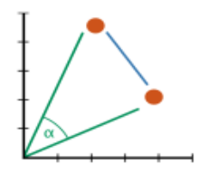
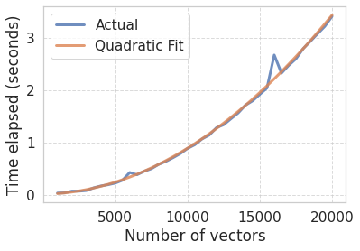
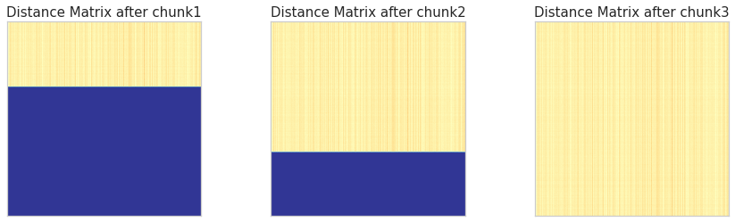

How to compute over a billion cosine distances on a laptop. Standing on the shoulders of the same giants, once again.
Author
Fabrizio Damicelli
Published
November 30, 2019
TL; DR: If you need to compute many vector pairwise metrics in batches, try sklearn.metrics.pairwise_distances_chunked
The problem
I had to compute pairwise cosine distances for a large list of high-dimensional vectors (e.g. word embedding). After a couple of (very bad) possible solutions I found a reasonable one, of course, standing on the shoulders of giants: the sklearn function sklearn.metrics.pairwise_distances_chunked. It is pretty much a one-liner and you don’t need to care about manually splitting/parallelizing things. This is a quick write-up for other people to save that time.
The intuition behind the computation we want to achieve is depicted in the following plot:

Two vectors in 2D space represented as points. The blue line shows the euclidean distance between the vectors. The \(\cos(\alpha)\) is the cosine distance.
Code
# Import everything we needimport timeimport matplotlib.pyplot as pltimport numpy as npimport pandas as pdfrom scipy.spatial.distance import cosinefrom sklearn.metrics.pairwise import cosine_distancesfrom sklearn.metrics import pairwise_distances_chunkedfrom tqdm import tqdmimport seaborn as snssns.set(context="notebook", font_scale=1.4, style="whitegrid")
For the sake of presentation and simplicity, we are just going to create and use a bunch of random vectors. And that bunch is going to be relatively large (to compute on a not-so-large laptop).
Let’s first get an idea of how many values need to compute if we take say 50 thousand vectors, which is not unrealistic at all (e.g., that could be taking all nouns of a word embedding):
n_vectors =50_000print("Number of pairwise distances to be computed", int(n_vectors * (n_vectors-1) /2))
Number of pairwise distances to be computed 1249975000
Oh, that is indeed quite a few of them.
The default solution
The most straight forward to do this is with scipy/sklearn pairwise distances functions as follows (we are going to time it to get an idea of how the problem scales).
%%timen_vectors =5_000n_dimensions =300all_vectors = np.random.random(size=(n_vectors, n_dimensions))# Compute pairwise distances with function from sklearndistances = cosine_distances(all_vectors)
CPU times: user 1.53 s, sys: 347 ms, total: 1.88 s
Wall time: 286 ms
So far, so good. But what happens if we want to compute it for more vectors?
CPU times: user 5.75 s, sys: 3.22 s, total: 8.97 s
Wall time: 1.99 s
As we see, we have 3 times more vectors, but the computation takes ~9 times longer! The reason for that is that the complexity of the problem scales non-linearly with the size of the input (number of vectors). In particular, the complexity is \(O(n^2)\), since we are filling the upper half of a square matrix, which grows as the square of number of vectors divided by two (which does not count for the limit case).
In practice, we don’t care much about those calculations as long as our computer is able to manage it in a reasonable time.
So how about having more vectors, say 30 or 50 thousand?
Closer look at the scaling
Let’s examine the computational complexity we mentioned above with some quick numerical experiments.
Code
def evaluate_scaling(func, n_vectors_vals, n_dimensions=300):"""Return times of func execution for n_vectors_vals""" times = []for n_vectors in tqdm(n_vectors_vals): all_vectors = np.random.random(size=(n_vectors, n_dimensions)) st = time.time() distances = func(all_vectors) times.append(time.time()-st)del distancesreturn timesdef plot_scaling(n_vectors_vals, times, **kwargs): plt.plot(n_vectors_vals, times, linewidth=3, alpha=.8, **kwargs) plt.xlabel("Number of vectors") plt.ylabel("Time elapsed (seconds)") plt.grid(True, linestyle="--", alpha=0.7)
We can use what we know about the complexity (\(O(n^2)\)) to fit a curve. In other words, we are going to fit a quadratic function that predicts the time it takes to compute all the pairwise distances as a function of the number of vectors. After that, we can use that function to extrapolate and estimate the performance for a much larger number of vectors.
# Fit a 2nd degree polynomial and get the polynomial evaluatorfit = np.polyfit(n_vectors_vals, times, 2) poly = np.poly1d(fit)# Check our fitplot_scaling(n_vectors_vals, times, label="Actual")plot_scaling(n_vectors_vals, poly(n_vectors_vals), label="Quadratic Fit")plt.legend();

The fit looks approximately correct. Remember, we don’t need to get a perfectly accurate estimate. We rather want to know if we should grab a coffee while the computation runs, let it compute overnight or if it is unfeasible with our hardware.
Ups! We’ve blown up the memory and forced the kernel to commit suicide. If you’re running the code along and 50 thousand still works in your computer, just try a higher number, you’ll get there pretty soon. My machine is fine until ~30 thousand vectors.
In short, what we thought was our initial problem (computation time) is actually secondary (it would take less than a minute). But either the result itself (cosine distances matrix) or other structures during intermediate computations simply don’t fit in memory.
Solution: first attempt
Iterate and compute the values one by one instead of computing it with the cosine_distances function. Spoiler: Bad idea. Let’s see:
Code
def cosine_distances_iter(all_vectors): n_vectors = all_vectors.shape[0] distances = np.zeros((n_vectors, n_vectors))# D is symmetric, so we don't want to compute twice - just use upper diag indicesfor i, j inzip(*np.triu_indices(n_vectors, k=1)): distances[i, j] = cosine(all_vectors[i], all_vectors[j])return distances
As the distance matrix is symmetric, we don’t repeat the computation and thus here we just show the upper triangle. Each entry \(D_{ij}\) of the distance matrix corresponds to the cosine distance between the vectors \(i\) and \(j\).
That is going to take a while – way longer than grabbing a coffee. Conclusion: there must be a better way!
Same giants, same shoulders: scikit-learn to the rescue
A much better alternative was to look into the scikit-learn library. It turns out there is a function pairwise_distances_chunked, which does exactly what we want. As the documentation explains, this function creates a Python generator that will build up a distance matrix chunk by chunk, thus computing the distances as lazily and returning the intermediate results. The following example will be hopefully useful:
n_vectors =20_000n_dimensions =100all_vectors = np.random.random(size=(n_vectors, n_dimensions))# We create an empty placeholder for the results, so that we # can visualize the intermediate stepsdistances = np.zeros((n_vectors, n_vectors))
Instead of computing and storing all the results, we construct the generator first:
Now we can call the next method and so generate the first chunk of results. Like with any other Python generator, we can repeat that call until the generator is exhausted.
chunk1 =next(chunk_generator)print("Shape of chunk 1:", chunk1.shape)chunk2 =next(chunk_generator)print("Shape of chunk 2:", chunk2.shape)chunk3 =next(chunk_generator)print("Shape of chunk 3:", chunk3.shape)print("Total size along first dimension :", sum((chunk1.shape[0], chunk2.shape[0], chunk3.shape[0])))
Shape of chunk 1: (6710, 20000)
Shape of chunk 2: (6710, 20000)
Shape of chunk 3: (6580, 20000)
Total size along first dimension : 20000
As we observe on the shape of the generated results, the rendered chunk is a vertical slice of the complete distance matrix. We can visualize it (yellow corresponds to the computed values):
Code
# WARNING: running this cell might take quite a bit of memorychunk_generator = pairwise_distances_chunked(all_vectors, metric="cosine")fig, axes = plt.subplots(ncols=3, figsize=(15, 4))chunks_idx =range(1, 4) # this depends on the number of total chunks (which I happen to know is 3 here)current_row =0distances = np.zeros((n_vectors, n_vectors))for ax, c inzip(axes.flat, chunks_idx): chunk =next(chunk_generator) n_rows, _ = chunk.shape# Update distances matrix distances[current_row: current_row + n_rows, :] = chunk current_row += n_rows ax.imshow(distances, cmap="RdYlBu_r") ax.set_title(f"Distance Matrix after chunk{c}", fontsize=15) ax.grid(False) ax.set_xticks([]) ax.set_yticks([])

Note
The size of each chunk will be figured out automatically by scikit-learn, no need to worry about that. If the results are small enough, it might just dispatch it all in one batch.
Back to 50K
So far so good. But our original problem was substantially larger than the example above, namely 50 (not 20) thousand vectors, which we already saw translates into many more computations.
Now we are going to test the chunked approach with more vectors – that’s what you came for :)
Assuming the final whole array fits in memory, we could collect all chunks and then concatenate them, like this:
distances = np.vstack(chunk_generator)
which is very nice, but will stop working with numpy 1.16, thus we need another container
# This might take a lot of RAM, so depending on your hardware you might just skip the concatenationdistances = np.vstack([chunk for chunk in chunk_generator])print("distances shape: ", distances.shape)
distances shape: (50000, 50000)
Voilà! We just computed the pairwise cosine distance for the 50 thousand vectors! If your matrix distance is too big such that cannot be concatenated into one array, then you can simply do whatever you need to with the individual chunks and save the intermediate results.
For the sake of completeness, let’s evaluate the scaling of that function:
Code
def cosine_distance_chunks(all_vectors): chunk_generator = pairwise_distances_chunked(all_vectors, metric="cosine")return np.vstack([chunk for chunk in chunk_generator])
pairwise_distances_chunked has some parameters that can be pretty useful: - n_jobs: distribute the computation across cores (though you might want to experiment a bit since overhead might make it actually worse). - metric: choose a metric different from cosine distance[1], such as euclidean distance or even your own defined function. You can check the rest of them in the documentation.
[1]: The sharp eye might have noticed that the term “metric” is not quite correct here. Strictly speaking cosine distance is not a metric (the reason for that can be found here).
Take home message: Whenever you find yourself carrying out an data/machine learning task and you have the feeling that there must be a better way, check scikit-learn first. The odds that you’ll find something useful are really on your side.